Intercorso · Lezione 5
Processi aleatori
Processi stocastici, momenti, stazionarietà, acf, passaggio attraverso filtri LTI, PSD, processo gaussiano, tempo discreto.
Indice della lezione
- Introduzione ai processi aleatori
- Introduzione
- Dal segnale deterministico al processo
- Sinusoide a fase casuale; fissare \omega o t
- Definizione di processo stocastico (1/2)
- Definizione di processo stocastico (2/2)
- Caratterizzazione statistica completa
- CDF del primo e del secondo ordine
- Distribuzioni congiunte dei campioni temporali (1/2)
- Il processo di Bernoulli: DF del primo e del secondo ordine
- Distribuzioni congiunte dei campioni temporali (2/2)
- Caratterizzazione statistica parziale
- Media di un processo
- Funzione di correlazione
- Funzione di covarianza
- Processi stazionari
- Processi stazionari (1/3)
- Processi stazionari (2/3)
- Processi stazionari (3/3)
- Processi stazionari in senso lato
- Funzione di autocorrelazione dei processi WSS
- Proprietà della acf (1/2)
- Significato fisico della Auto Correlation Function (acf) (1/2)
- Significato fisico della acf (2/2)
- Funzioni di correlazione incrociata
- Crosscorrelazione
- Crosscovarianza
- Processi indipendenti, incoerenti, incorrelati
- Processi complessi
- Processi stocastici complessi
- Trasmissione di un processo attraverso un filtro LTI
- Trasmissione di un processo WSS attraverso un filtro LTI
- Media dell'uscita (1/2)
- Media dell'uscita (2/2)
- Funzioni di correlazione delle uscite di un sistema LTI (1/3)
- Funzioni di correlazione delle uscite di un sistema LTI (2/3)
- Funzioni di correlazione delle uscite di un sistema LTI (3/3)
- Densità spettrale di potenza
- Densità spettrale di potenza (PSD)
- PSD e sistemi LTI
- Significato fisico della PSD
- Proprietà della PSD
- Densità spettrali mutue (versione aggiornata)
- Somma di due processi WSS
- Il processo gaussiano
- Il processo gaussiano (1/3)
- Il processo gaussiano (2/3)
- Il processo gaussiano (3/3)
- Proprietà dei processi gaussiani
- Processi a tempo discreto
- Processi aleatori a tempo discreto (1/2) (versione aggiornata)
- Processi aleatori a tempo discreto (2/2) (versione aggiornata)
- Spiegazioni e dimostrazioni passo-passo
- Domande da esame
Il corso, slide per slide
Introduzione ai processi aleatori
Introduzione
- Un processo stocastico (o processo aleatorio, o segnale aleatorio) è l'estensione naturale del concetto di variabile aleatoria quando si trattano segnali.
- In molte situazioni l'ipotesi di segnale deterministico non regge, ed è più appropriato modellare i segnali come funzioni aleatorie. Esempi: il rumore termico nei circuiti elettronici; i segnali generati da una sorgente di informazione.
- Esempio. \Omega = \{0, 1\} con P(\{\omega = 1\}) \triangleq p e P(\{\omega = 0\}) \triangleq q = 1 - p. Il segnale aleatorio è
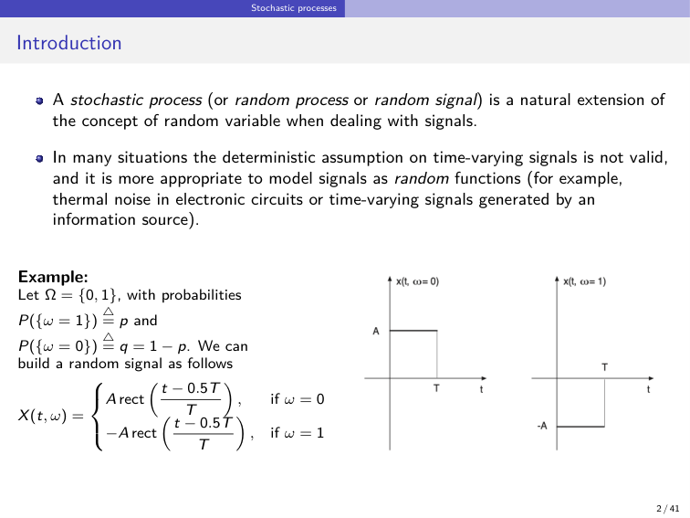
Le due realizzazioni: x(t, \omega = 0) vale A per 0 < t < T, x(t, \omega = 1) vale -A nello stesso intervallo.
Dal segnale deterministico al processo
- Un segnale s(t) descritto nel dominio del tempo, con una descrizione analitica o con un grafico, è un segnale deterministico. «Prendiamo questi segnali e li estendiamo su fenomeni non predicibili a priori».
- Una variabile aleatoria associa a ogni esito un numero: X: \omega \to X(\omega) \in \mathbb{R}.
- In un processo, a ogni esito \omega_i si associa non un numero ma una funzione del tempo S(\omega_i, t).
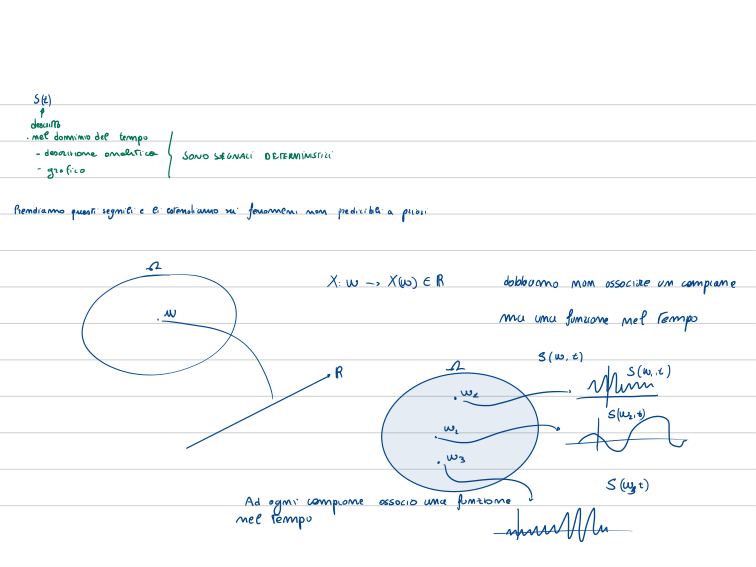
Sinusoide a fase casuale; fissare \omega o t
- Esempio: X(t) = A\cos(2\pi f_0 t + \Theta), con A e f_0 deterministiche e \Theta \sim \mathcal{U}(0, 2\pi). È un «segnale aleatorio ad ampiezza continua».
- X(t, \omega) «si particolarizza» a seconda che si fissi \omega o t:
- fisso \omega = \bar\omega: X(t, \bar\omega) = x(t), un segnale nel tempo;
- fisso t = \bar t: X(\bar t, \omega) = X(\omega), una variabile aleatoria;
- fisso entrambi: un numero.
- Tempo continuo: X(t, \omega) con t \in \mathbb{R}. Tempo discreto: X(n, \omega) con n \in \mathbb{Z}.
- Due punti di vista: una collezione di variabili aleatorie indicizzate rispetto al tempo.
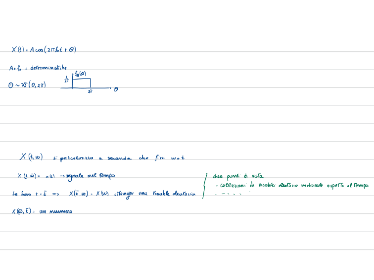
Definizione di processo stocastico (1/2)
- Un processo X(t, \omega) si può vedere come una collezione di segnali nel tempo (dette realizzazioni o sample functions), corrispondenti ai diversi esiti di un esperimento aleatorio.
- A ogni esito \omega = \omega_i nello spazio di probabilità (\Omega, \mathcal{S}, P) corrisponde un segnale deterministico X(t, \omega_i) \equiv x_i(t) (descrizione analoga a quella delle variabili aleatorie).
- Fissato un istante t_0, la funzione X(t_0, \omega) è una variabile aleatoria.
- Per ogni t_0 e ogni \omega_i \in \Omega, X(t_0, \omega_i) è un numero.
- In alternativa, un processo è una collezione di variabili aleatorie indicizzate nel tempo.
- Se l'insieme degli indici è \mathbb{R}: processo a tempo continuo.
- Se è \mathbb{Z}: processo a tempo discreto, cioè una successione di variabili aleatorie \{X_i\}_{i=-\infty}^{+\infty}.
- Questo punto di vista è adatto allo sviluppo matematico della teoria.
- Per semplicità si omette \omega e si scrive X(t) (o x(t) se non c'è ambiguità).
Definizione di processo stocastico (2/2)
- In una variabile aleatoria l'esito di un esperimento è associato a un numero. In un processo stocastico è associato a una forma d'onda, funzione del tempo.
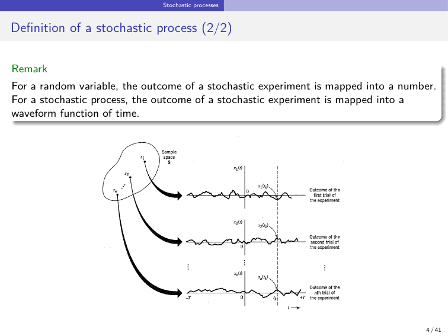
Lo spazio campione S con gli esiti s_1, s_2, \dots, s_n; ogni esito dà una forma d'onda x_1(t), \dots, x_n(t) su (-T, +T). Una verticale in t_k taglia le forme d'onda nei valori x_1(t_k), \dots, x_n(t_k), cioè i valori della variabile aleatoria X(t_k).
Caratterizzazione statistica completa
CDF del primo e del secondo ordine
- X(t): processo a tempo continuo e ampiezza continua. Per t = t_1, X(t_1) è una variabile aleatoria, con CDF F_{X(t_1)}(x) \triangleq P(\{X(t_1) \le x\}) per ogni x e ogni t_1. Se la si conosce, si ha la CDF del primo ordine.
- Campionando in due istanti, X(t_1) e X(t_2) sono una coppia di variabili aleatorie con CDF congiunta F_{X(t_1)X(t_2)}(x_1, x_2) = P(\{X(t_1) \le x_1, X(t_2) \le x_2\}). Se la si conosce per ogni t_1, t_2, si ha la CDF del secondo ordine.
- Nota: negli appunti compare \forall t_1 \in \mathbb{Z}, da leggere t_1 \in \mathbb{R} (tempo continuo).
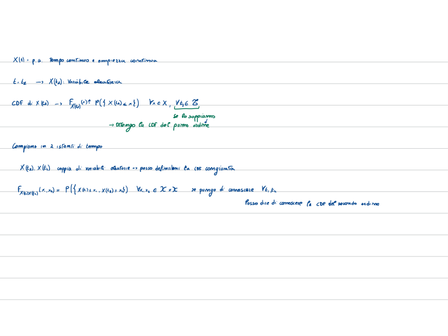
Distribuzioni congiunte dei campioni temporali (1/2)
- La descrizione statistica di un processo si basa sulla CDF (o, equivalentemente, sulla pdf) di vettori di campioni del segnale aleatorio.
- X(t_1), \dots, X(t_k) sono le variabili aleatorie ottenute campionando X(t) negli istanti t_1, \dots, t_k. Per (x_1, \dots, x_k) \in \mathbb{R}^k, la CDF congiunta è
e la pdf congiunta è
- Se si conosce la CDF congiunta (1), o la pdf (2), per qualunque scelta degli istanti t_1, \dots, t_k, si dice che si conosce la caratterizzazione statistica di ordine k del processo.
- Nota a mano: integrando rispetto a una variabile si ottiene la pdf del primo ordine, \int_{-\infty}^{+\infty} f_{X(t_1)X(t_2)}(x_1, x_2)\,dx_2 = f_{X(t_1)}(x_1).
- Refusi della slide: nella (2) la derivata è scritta \partial^n (corretta a mano in \partial^k); il rimando è alla «CDF congiunta (36)» invece che alla (1).
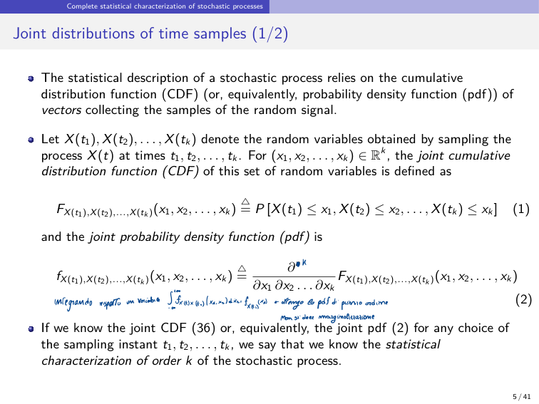
Il processo di Bernoulli: DF del primo e del secondo ordine
- Per processi aleatori discreti a tempo discreto si usa la DF (distribuzione di probabilità).
- Primo ordine: p_{X(n)}(x) \triangleq P(X(n) = x) = p^{x}\,q^{1-x}, con x \in \{0, 1\}.
- Secondo ordine: p_{X(n_1)X(n_2)}(x_1, x_2) \triangleq P(\{X(n_1) = x_1, X(n_2) = x_2\}) = p^{w(\mathbf{x})}\,q^{2 - w(\mathbf{x})}, dove \mathbf{x} = (x_1, x_2) e w(\mathbf{x}) è il numero di 1 contenuti nel vettore, supponendo che i lanci siano statisticamente indipendenti.
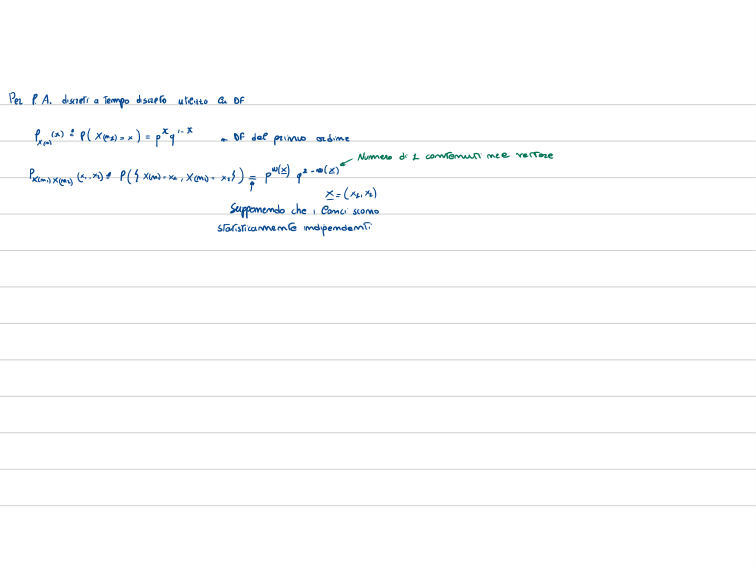
Distribuzioni congiunte dei campioni temporali (2/2)
- Un processo è completamente caratterizzato se la CDF congiunta di ordine k (o la pdf) è nota per ogni k \in \mathbb{N} e ogni scelta degli istanti t_1, \dots, t_k.
- La collezione di CDF e pdf deve essere coerente: quelle di ordine inferiore si ottengono come marginali di quelle di ordine superiore.
- Finora l'ampiezza di X(t) è stata supposta continua. Se è discreta, conviene usare la distribuzione di probabilità (DF). Esempio: il processo di Bernoulli.
- La caratterizzazione completa è difficile da ottenere in molti casi pratici ⇒ si usa la caratterizzazione statistica parziale.
Caratterizzazione statistica parziale
Media di un processo
- Per un processo reale X(t), la media è il valore atteso della variabile aleatoria ottenuta campionando il processo in t:
con f_{X(t)}(x) pdf del primo ordine. In generale \mu_X(t) è funzione del tempo.
Funzione di correlazione
- La funzione di autocorrelazione (acf) è il valore atteso del prodotto di due variabili aleatorie, X(t_1) e X(t_2):
con f_{X(t_1),X(t_2)} pdf del secondo ordine. In generale dipende da t_1 e t_2 separatamente.
Funzione di covarianza
- La autocovarianza è
- Se media e acf sono note, si ricava l'autocovarianza. In generale dipende da t_1 e t_2 separatamente.
Processi stazionari
Processi stazionari (1/3)
- In generale la caratterizzazione statistica di un processo cambia nel tempo. Se le proprietà statistiche non sono influenzate, in qualche misura, dalla scelta dell'origine dei tempi, il processo si dice stazionario in qualche senso. Si definiscono diverse forme di stazionarietà.
- Sia X(t) un processo iniziato in t = -\infty, campionato in t_1, \dots, t_k, con CDF di ordine k F_{X(t_1),\dots,X(t_k)}(x_1, \dots, x_k).
- Si traslano tutti gli istanti di campionamento di una quantità fissa \tau (traslazione temporale): le variabili X(t_1 + \tau), \dots, X(t_k + \tau) hanno CDF F_{X(t_1+\tau),\dots,X(t_k+\tau)}(x_1, \dots, x_k).
Processi stazionari (2/3)
- X(t) è stazionario di ordine k se
per ogni traslazione \tau e ogni scelta di t_1, \dots, t_k.
- X(t) è stazionario in senso stretto (SSS) se la (6) vale per ogni k \in \mathbb{N}: è la forma più forte. Spesso bastano forme più deboli.
- Stazionario del primo ordine: la (6) vale per k = 1. Con \tau = -t si ha F_{X(t)}(x) = F_{X(t+\tau)}(x) = F_{X(0)}(x) per ogni t \in \mathbb{R} ⇒ la distribuzione del primo ordine non dipende dal tempo.
- Per un processo stazionario del primo ordine la media è costante:
Processi stazionari (3/3)
- Stazionario del secondo ordine: la (6) vale per k = 2. Con \tau = -t_2:
La distribuzione del secondo ordine dipende solo dalla differenza tra gli istanti di campionamento, non dagli istanti particolari.
- Per un processo stazionario del secondo ordine, f_{X(t_1),X(t_2)}(x_1, x_2) dipende solo da t_1 - t_2 e quindi anche
- Se un processo è stazionario di ordine k, lo è anche di ordine k-1, k-2, e così via (il viceversa non vale in generale).
Processi stazionari in senso lato
- Un'altra classe importante è quella dei processi stazionari in senso lato (WSS, wide-sense stationary, o debolmente stazionari). X(t) è WSS se valgono due condizioni:
- la media è costante per ogni t;
- la acf dipende solo dalla differenza tra due istanti di campionamento.
- Stazionarietà in senso stretto ⇒ stazionarietà in senso lato.
Funzione di autocorrelazione dei processi WSS
Proprietà della acf (1/2)
- Per un processo WSS la acf si può scrivere come lag-acf:
dove \tau è il lag, l'intervallo tra i campioni in t_1 = t e t_2 = t_1 - \tau.
- Proprietà:
- il valore quadratico medio si ottiene ponendo \tau = 0: R_{XX}(0) = E[X^2(t)];
- R_{XX}(\tau) è una funzione pari: R_{XX}(-\tau) = R_{XX}(\tau);
- R_{XX}(\tau) ha il massimo in modulo in \tau = 0: \lvert R_{XX}(\tau)\rvert \le R_{XX}(0).
- Acf normalizzata:
con valori in [-1, 1], cioè \lvert\rho_{XX}(\tau)\rvert \le 1.
Significato fisico della Auto Correlation Function (acf) (1/2)
- R_{XX}(\tau) descrive l'interdipendenza di due variabili aleatorie ottenute campionando X(t) a \tau secondi di distanza.
- Più rapidamente X(t) cambia nel tempo, più rapidamente R_{XX}(\tau) decresce dal massimo R_{XX}(0) al crescere di \tau.
- Questo comportamento si caratterizza con un tempo di decorrelazione \tau_{dec}: per \tau > \tau_{dec}, il modulo di R_{XX}(\tau) resta sotto un valore prescritto.
Significato fisico della acf (2/2)
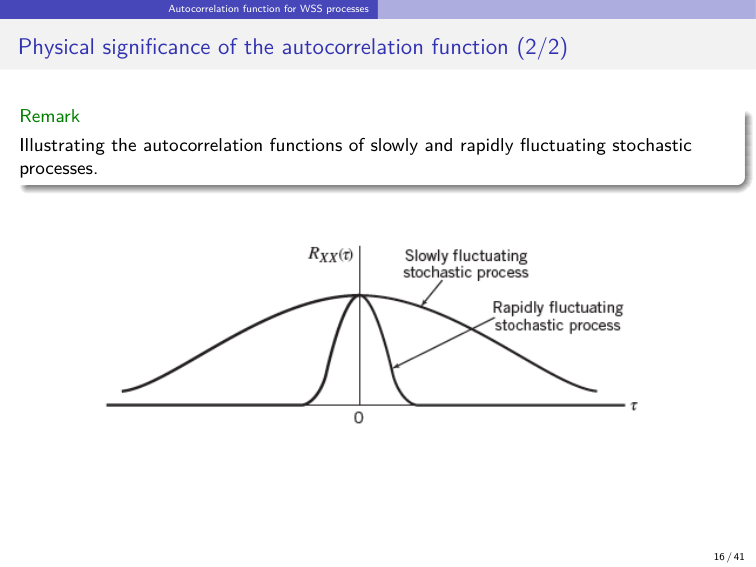
Acf di processi che fluttuano lentamente e rapidamente: nel primo caso la acf decresce lentamente da R_{XX}(0) (tempo di decorrelazione lungo), nel secondo rapidamente.
Funzioni di correlazione incrociata
Crosscorrelazione
- Per due processi reali X(t) e Y(t), con acf R_{XX}(t, \tau) e R_{YY}(t, \tau), si definiscono le lag-crosscorrelazioni
che dipendono dall'ordine dei due processi.
- X(t) e Y(t) sono congiuntamente WSS se ciascuno è WSS e, in più, R_{XY}(t, \tau) \equiv R_{XY}(\tau).
- In generale la crosscorrelazione non è pari in \tau e non ha il massimo nell'origine, ma vale R_{XY}(\tau) = R_{YX}(-\tau).
Crosscovarianza
- Per due processi con autocovarianze C_{XX}(\tau) e C_{YY}(\tau), la lag-crosscovarianza è
e dipende dall'ordine dei due processi.
- A media nulla (\mu_X(t) = \mu_Y(t) = 0): C_{XY}(t, \tau) = R_{XY}(t, \tau) e C_{YX}(t, \tau) = R_{YX}(t, \tau).
- Se sono congiuntamente WSS, C_{XY}(t, \tau) = C_{XY}(\tau).
Processi indipendenti, incoerenti, incorrelati
- Indipendenti: gli insiemi \{X(t_1), \dots, X(t_k)\} e \{Y(t'_1), \dots, Y(t'_j)\} sono indipendenti per ogni k, j \in \mathbb{N} e per ogni scelta di t_1, \dots, t_k e t'_1, \dots, t'_j.
- Incoerenti: R_{XY}(\tau) = 0 per ogni \tau \in \mathbb{R}.
- Incorrelati: C_{XY}(\tau) = 0 per ogni \tau \in \mathbb{R}.
- Si può dimostrare che se X(t) e Y(t) sono indipendenti, allora sono incorrelati. Se \mu_X = \mu_Y = 0, incoerenza e incorrelazione sono equivalenti.
Processi complessi
Processi stocastici complessi
- Un processo complesso si rappresenta come Z(t) = X(t) + jY(t). La caratterizzazione statistica completa si ottiene dalla caratterizzazione congiunta di parte reale X(t) e parte immaginaria Y(t).
- Per la caratterizzazione parziale:
con Z^\ast il complesso coniugato di Z.
- A rigore servirebbe un altro momento del secondo ordine, la acf coniugata R_{ZZ^\ast}(t_1, t_2) \triangleq E[Z(t_1)\,Z(t_2)], che però è nulla per la maggior parte dei processi.
Trasmissione di un processo attraverso un filtro LTI
Trasmissione di un processo WSS attraverso un filtro LTI
- X(t) è l'ingresso di un filtro lineare tempo-invariante (LTI) deterministico, con risposta impulsiva h(t); Y(t) è l'uscita stocastica:
- In generale è difficile ricavare la distribuzione di Y(t), anche se si conosce quella di X(t). Spesso basta calcolare media e acf di Y(t) in funzione di quelle di X(t), supponendo X(t) WSS.
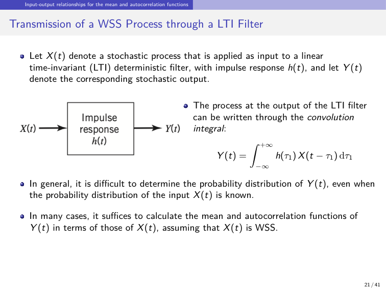
Media dell'uscita (1/2)
- \mu_Y(t) = E[Y(t)] = E\Big[\int h(\tau_1)\,X(t - \tau_1)\,d\tau_1\Big] (14).
- Se E[X(t)] è finito per ogni t e il filtro è stabile, si scambiano valore atteso e integrale:
La media dell'uscita è la convoluzione tra la media dell'ingresso e la risposta impulsiva.
Media dell'uscita (2/2)
- Con ingresso WSS, \mu_X(t) \equiv \mu_X:
H(0) è la risposta del sistema a frequenza zero.
- La media dell'uscita di un filtro LTI con ingresso WSS è la media dell'ingresso moltiplicata per la risposta a frequenza zero del filtro.
Funzioni di correlazione delle uscite di un sistema LTI (1/3)
- Si calcola la crosscorrelazione delle due uscite Y_1(t) e Y_2(t) di un sistema LTI, R_{Y_1Y_2}(t_1, t_2) = E[Y_1(t_1)\,Y_2(t_2)].
- Con la relazione ingresso-uscita e scambiando l'ordine di integrazione (se possibile):
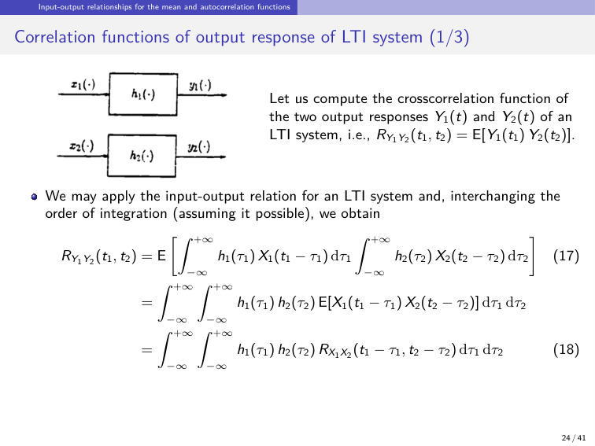
Funzioni di correlazione delle uscite di un sistema LTI (2/3)
- Se X_1(t) e X_2(t) sono congiuntamente WSS, la crosscorrelazione dipende solo dalla differenza tra t_1 - \tau_1 e t_2 - \tau_2. Ponendo \tau = t_1 - t_2 nella (18):
che dipende solo dal lag \tau. (r_{h_1h_2}(\tau) = h_1(\tau) \ast h_2(-\tau).)
- Se i due ingressi sono incoerenti, lo sono anche le uscite: l'elaborazione LTI preserva l'incoerenza (la slide scrive «saves incoherence»).
Funzioni di correlazione delle uscite di un sistema LTI (3/3)
- Particolarizzando la (18) a h_1 = h_2 = h e X_1 = X_2 = X:
- Se X(t) è WSS: R_{YY}(\tau) = R_{XX}(\tau) \ast h(\tau) \ast h(-\tau) = R_{XX}(\tau) \ast r_{hh}(\tau).
- Se l'ingresso di un sistema LTI stabile è WSS, anche l'uscita è WSS.
- Dalle (18) e (20) si ricavano anche R_{YX}(\tau) e R_{XY}(\tau): ponendo Y_1 = Y, Y_2 = X, h_1 = h, h_2 = \delta si ha R_{YX}(\tau) = R_{XX}(\tau) \ast h(\tau). Analogamente R_{XY}(\tau) = R_{XX}(\tau) \ast h(-\tau).
Densità spettrale di potenza
Densità spettrale di potenza (PSD)
- La PSD di X(t) è
dove X_T(f) è la trasformata di Fourier della versione finestrata X_T(t) = X(t)\,\text{rect}[t/(2T)].
- Si può dimostrare che la PSD di un processo WSS è la trasformata di Fourier della sua acf R_{XX}(\tau): è la relazione di Wiener-Khinchin.
- Il valore quadratico medio, cioè la potenza P_X del processo WSS:
PSD e sistemi LTI
- Sia S_{YY}(f) la PSD dell'uscita Y(t) di un filtro con risposta in frequenza H(f) e ingresso WSS X(t). Dalla relazione di Wiener-Khinchin e da R_{YY}(\tau) = R_{XX}(\tau) \ast h(\tau) \ast h(-\tau):
- La PSD dell'uscita è la PSD dell'ingresso moltiplicata per il modulo quadro della risposta in frequenza del filtro.
Significato fisico della PSD
- Si fa passare il processo WSS X(t) in un filtro ideale a banda stretta, con \lvert H(f)\rvert centrato in f_c e banda \Delta f.
- Dalla (22), se \Delta f è sufficientemente piccola rispetto a f_c e S_{XX}(f) è continua, la potenza \Delta P_X delle componenti di X(t) nell'intervallo di lunghezza 2\Delta f è
- S_{XX}(f) si misura in watt per hertz (W/Hz).
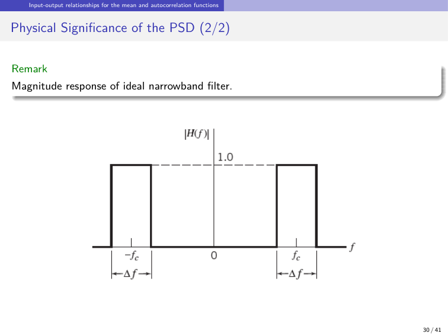
Risposta in modulo del filtro ideale a banda stretta: vale 1 in due finestre di larghezza \Delta f centrate in \pm f_c.
Proprietà della PSD
- Il valore a frequenza zero di un processo WSS è l'area sotto la acf: S_{XX}(0) = \int_{-\infty}^{+\infty} R_{XX}(\tau)\,d\tau (23).
- Il valore quadratico medio è l'area sotto la PSD: E[X^2(t)] = \int_{-\infty}^{+\infty} S_{XX}(f)\,df = R_{XX}(0) (24).
- La PSD è non negativa: S_{XX}(f) \ge 0, per ogni f \in \mathbb{R}.
- La PSD di un processo WSS reale è una funzione pari: S_{XX}(-f) = S_{XX}(f).
- La PSD opportunamente normalizzata ha le proprietà di una pdf:
con p_{XX}(f) \ge 0 per ogni f e area totale unitaria.
- Esempio: calcolare la PSD di un segnale modulato linearmente. La slide non svolge l'esempio. Ipotesi usate qui: X(t) = \sum_n b[n]\,p(t - nT - D), con simboli a media nulla, incorrelati e di varianza \sigma_b^2, e ritardo D uniforme in [0, T) indipendente dai simboli. Allora R_{XX}(\tau) = \frac{\sigma_b^2}{T}\,r_{pp}(\tau), il processo è WSS e
Con l'impulso rettangolare di durata T e altezza 1 si ottiene S_{XX}(f) = \sigma_b^2\,T\,\text{sinc}^2(fT).
Densità spettrali mutue (versione aggiornata)
- La cross-spectral density caratterizza le relazioni tra due processi nel dominio della frequenza:
con X_T(f) e Y_T(f) trasformate di Fourier delle versioni finestrate di X(t) e Y(t).
- Per due processi congiuntamente WSS, la cross-spectral density è la trasformata di Fourier della loro crosscorrelazione:
- A differenza della PSD, S_{XY}(f) non è necessariamente reale né non negativa.
- Per processi complessi la relazione R_{XY}(\tau) = R_{YX}(-\tau) si generalizza a R_{XY}(\tau) = R_{YX}^\ast(-\tau), e quindi
(nella versione precedente della slide, per processi reali: S_{XY}(f) = S_{YX}(-f) = S_{YX}^\ast(f)).
Somma di due processi WSS
- X(t) e Y(t) hanno media nulla e Z(t) = X(t) + Y(t). Si cerca la PSD di Z(t).
- L'acf di Z(t):
- Con \tau = t_1 - t_2 e stazionarietà congiunta:
- Trasformando: S_{ZZ}(f) = S_{XX}(f) + S_{XY}(f) + S_{YX}(f) + S_{YY}(f) (29).
- Se X(t) e Y(t) sono WSS incoerenti, R_{XY}(\tau) = R_{YX}(\tau) = 0 per ogni \tau, quindi S_{XY} = S_{YX} = 0 e
- La PSD della somma di processi WSS incoerenti (o, equivalentemente, a media nulla e incorrelati) è la somma delle PSD.
Il processo gaussiano
Il processo gaussiano (1/3)
- Il processo gaussiano è il più frequente nello studio dei sistemi di comunicazione, per applicabilità pratica e trattabilità matematica.
- Si campiona X(t) in t_1, \dots, t_n. Se il processo è gaussiano, le variabili X(t_1), \dots, X(t_n) sono congiuntamente gaussiane per ogni n, con pdf di ordine n completamente determinata dalle medie e dalle covarianze:
- Sia \mathbf{X} \triangleq [X(t_1), \dots, X(t_n)]^T il vettore aleatorio e \mathbf{x} \triangleq [x_1, \dots, x_n]^T un suo valore (^T indica la trasposizione).
Il processo gaussiano (2/3)
- Il vettore \mathbf{X} ha distribuzione gaussiana multivariata:
dove \boldsymbol{\mu} \triangleq [\mu_X(t_1), \dots, \mu_X(t_n)]^T è il vettore delle medie, \boldsymbol{\Sigma} la matrice di covarianza con elemento \{\boldsymbol{\Sigma}\}_{k,i} = C_{XX}(t_k, t_i), e \boldsymbol{\Sigma}^{-1} la sua inversa.
- \boldsymbol{\Sigma} è simmetrica (\boldsymbol{\Sigma} = \boldsymbol{\Sigma}^T) e semidefinita positiva (\mathbf{u}^T\boldsymbol{\Sigma}\,\mathbf{u} \ge 0 per ogni \mathbf{u} \in \mathbb{R}^n). Per un processo gaussiano non degenere è definita positiva (\mathbf{u}^T\boldsymbol{\Sigma}\,\mathbf{u} > 0 per ogni \mathbf{u} \ne \mathbf{0}), quindi invertibile.
Il processo gaussiano (3/3)
- I processi prodotti da fenomeni fisici sono spesso tali che un modello gaussiano è appropriato; questo è confermato dagli esperimenti.
- Il teorema del limite centrale ne fornisce una giustificazione matematica.
- La frequenza con cui un modello gaussiano è adatto e la facilità di trattazione rendono il processo gaussiano molto importante nello studio dei sistemi di comunicazione.
Proprietà dei processi gaussiani
- Se un processo gaussiano è applicato a un filtro lineare stabile, il processo in uscita è anch'esso gaussiano.
- Se un processo gaussiano è WSS, allora è anche strettamente stazionario.
- Se le variabili X(t_1), \dots, X(t_n) sono incorrelate, cioè C_{XX}(t_k, t_i) = 0 per k \ne i, allora sono statisticamente indipendenti.
- L'incorrelazione vuol dire che la matrice di covarianza è diagonale, \boldsymbol{\Sigma} = \text{diag}(\sigma_1^2, \dots, \sigma_n^2), con \sigma_i^2 varianza di X(t_i) ⇒ la pdf (33) si semplifica in
- La pdf congiunta è il prodotto delle pdf delle singole variabili.
Processi a tempo discreto
Processi aleatori a tempo discreto (1/2) (versione aggiornata)
- Finora si sono considerati processi a tempo continuo, X(t; \omega) con t \in \mathbb{R}. Se la variabile temporale appartiene a \mathbb{Z}, il processo è a tempo discreto e si indica con X(n; \omega).
- Un processo a tempo discreto è una successione di variabili aleatorie \{X(n)\}_{n \in \mathbb{Z}} (con \omega omesso). Per n \in \{0, 1, \dots, N-1\} si può rappresentare con un vettore aleatorio.
- CDF, pdf e DF si definiscono come nel caso a tempo continuo, sostituendo t con n.
- Media e crosscorrelazione:
(nella versione precedente la (35) e la (36) erano scritte come integrali con le pdf, e la (36) senza il coniugato).
Processi aleatori a tempo discreto (2/2) (versione aggiornata)
- La crosscovarianza di due processi a tempo discreto:
- Con X(n) \equiv Y(n) nelle (36) e (37) si ottengono le definizioni usuali di autocorrelazione e autocovarianza.
- Per due processi a tempo discreto congiuntamente WSS, la cross-spectral density è
dove, per Z \in \{X, Y\}, Z_N(\nu) \triangleq \sum_{n=-N}^{N} Z(n)\,e^{-j2\pi\nu n} è la trasformata di Fourier a tempo discreto (DTFT) del processo troncato Z(n).
- Con X(n) \equiv Y(n) si ottiene la PSD di un processo a tempo discreto:
- Per il teorema di Wiener-Khinchin, la PSD di un processo WSS a tempo discreto è la DTFT della sua acf:
Spiegazioni e dimostrazioni passo-passo
Apri una voce per leggere la spiegazione in parole semplici e le dimostrazioni svolte riga per riga (🧩 = passaggio ricostruito da me).
Processo aleatorio (processo stocastico)
Spiegazione
Esempio della slide: un rettangolo di segno casuale
\Omega = \{0, 1\} con P(\{\omega = 1\}) \triangleq p e P(\{\omega = 0\}) \triangleq q = 1 - p. Il segnale aleatorio è
le due realizzazioni. x(t, \omega = 0) vale A per 0 < t < T; x(t, \omega = 1) vale -A nello stesso intervallo. Fuori da (0, T) entrambe valgono 0.
🧩 Le due facce sull'esempio (lettura mia):
- come forme d'onda: ci sono due sole realizzazioni possibili, i due rettangoli della figura;
- fissato un istante t_0 \in (0, T): X(t_0) è una variabile aleatoria discreta che vale A con probabilità q e -A con probabilità p, del tipo di Bernoulli a meno di una trasformazione affine;
- fissato t_0 fuori da (0, T): X(t_0) = 0 con certezza.
Media, autocorrelazione e covarianza di questo processo sono calcolate in momenti di un processo: la media dipende da t.
Esempio degli appunti: sinusoide a fase casuale
- A [V] e f_0 [Hz] sono deterministiche;
- l'unica cosa aleatoria è la fase \Theta [rad], uniforme in (0, 2\pi): f_\Theta(\vartheta) = \frac{1}{2\pi} per 0 \le \vartheta \le 2\pi e zero altrove. È il rettangolo disegnato negli appunti (uniforme);
- nota: è un «segnale aleatorio ad ampiezza continua».
Appunti a mano: il processo, la pdf uniforme di \Theta (altezza 1/(2\pi) tra 0 e 2\pi), le tre particolarizzazioni di X(t, \omega) viste sopra e, a destra, i «due punti di vista».
🧩 Le tre particolarizzazioni sull'esempio (lettura mia):
- fisso l'esito, cioè un valore \bar\vartheta della fase: x(t) = A\cos(2\pi f_0 t + \bar\vartheta) è un normale coseno deterministico. Le realizzazioni sono tutti i coseni di ampiezza A e frequenza f_0, ciascuno spostato di una fase diversa;
- fisso l'istante \bar t: X(\bar t) = A\cos(2\pi f_0 \bar t + \Theta) è una variabile aleatoria, funzione della v.a. \Theta, con valori in [-A, A];
- fisso entrambi: A\cos(2\pi f_0\bar t + \bar\vartheta) è un numero.
Perché "ad ampiezza continua": \Theta assume un continuo di valori, quindi anche X(\bar t) assume con continuità tutti i valori tra -A e A. Nel rettangolo, invece, X(t_0) vale solo \pm A (o 0): ampiezza discreta.
Media e autocorrelazione di questo processo sono calcolate in momenti di un processo. A differenza del rettangolo, il processo è WSS (stazionarieta).
Il quadro generale: esiti, realizzazioni, variabili aleatorie
Lo spazio campione S contiene gli esiti s_1, s_2, \dots, s_n. Ogni esito, cioè ogni prova dell'esperimento, produce una forma d'onda x_1(t), x_2(t), \dots, x_n(t) sull'intervallo (-T, +T). Una linea verticale all'istante t_k taglia tutte le forme d'onda nei valori x_1(t_k), x_2(t_k), \dots, x_n(t_k): al variare dell'esito, sono i valori della variabile aleatoria X(t_k).
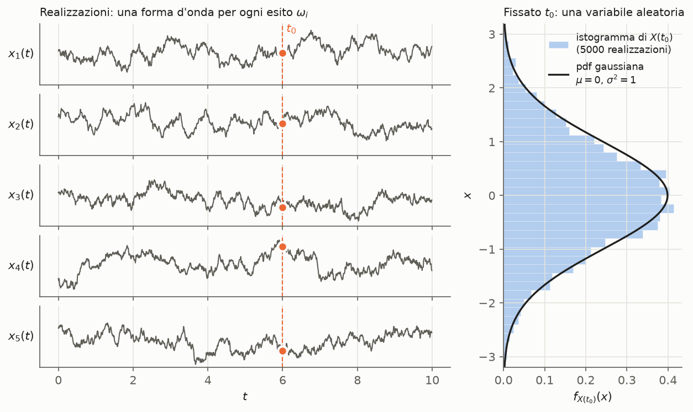
🧩 Grafico mio. Processo gaussiano a media nulla con autocorrelazione e^{-|\tau|/\tau_c}, \tau_c = 0.5. A sinistra cinque realizzazioni: fissato t_0 = 6, ognuna dà un numero (punto arancio). A destra i valori X(t_0) di 5000 realizzazioni: il loro istogramma riproduce la pdf gaussiana \mathcal{N}(0, 1). È la variabile aleatoria che si ottiene fissando il tempo.
Caratterizzazione statistica completa
- La descrizione statistica di un processo si basa sulla CDF (o, in modo equivalente, sulla pdf) di vettori di campioni del segnale aleatorio.
- X(t_1), \dots, X(t_k) sono le variabili aleatorie ottenute campionando X(t) negli istanti t_1, \dots, t_k. La loro CDF congiunta è la (1) e la pdf congiunta la (2).
- Se si conosce la (1), o la (2), per qualunque scelta degli istanti t_1, \dots, t_k, si conosce la caratterizzazione statistica di ordine k.
- Il processo è completamente caratterizzato se si conosce la CDF (o pdf) congiunta di ordine k per ogni k \in \mathbb{N} e ogni scelta degli istanti.
- CDF e pdf devono essere coerenti: quelle di ordine più basso si ottengono come marginali di quelle di ordine più alto (derivazione sopra).
- Finora si è supposta l'ampiezza continua. Se l'ampiezza di X(t) è discreta conviene usare la distribuzione di probabilità (DF, vedi variabile aleatoria), per esempio nel processo di Bernoulli (sezione sotto).
- La caratterizzazione completa è difficile da ottenere in molti casi pratici. Ci si accontenta allora di una caratterizzazione parziale, cioè media e autocorrelazione: momenti di un processo.
🧩 Perché "difficile": servono infinite funzioni (tutte le pdf di ogni ordine k, per ogni scelta di istanti), mentre media e autocorrelazione sono solo due funzioni, di una e di due variabili.
Primo e secondo ordine negli appunti. Gli appunti costruiscono la (1) partendo da k = 1 e k = 2, per un processo «a tempo continuo e ampiezza continua»:
- fissato t = t_1, X(t_1) è una variabile aleatoria, con CDF F_{X(t_1)}(x) \triangleq P(\{X(t_1) \le x\}) per ogni x \in \mathcal{X}. Se la si conosce per ogni t_1 («se lo sappiamo»), si ha la CDF del primo ordine;
- campionando in due istanti, X(t_1) e X(t_2) sono una coppia di variabili aleatorie e se ne può definire la CDF congiunta, F_{X(t_1)X(t_2)}(x_1, x_2) = P(\{X(t_1) \le x_1, X(t_2) \le x_2\}) per ogni (x_1, x_2) \in \mathcal{X}\times\mathcal{X}. Se si «giunge a conoscerla» per ogni coppia t_1, t_2, si conosce la CDF del secondo ordine.
🧩 \mathcal{X} è l'insieme dei valori che il processo può assumere: con ampiezza continua, \mathbb{R} o un suo intervallo. "Per ogni t_1" è la parte importante: la CDF di X(t_1) descrive un solo istante, mentre la CDF del primo ordine è l'intera famiglia di CDF, una per istante. È quindi una funzione sia di x sia di t_1.
⚠️ Negli appunti c'è scritto \forall t_1 \in \mathbb{Z}, ma il processo è a tempo continuo: va letto t_1 \in \mathbb{R}.
Appunti a mano: CDF del primo ordine, con la nota in verde «se lo sappiamo → ottengo la CDF del primo ordine» sotto \forall t_1, e CDF congiunta del secondo ordine.
Dalla pdf del secondo ordine a quella del primo: «integrando rispetto a una variabile»
❓ Nota non chiara: l'operazione scritta negli appunti è proprio quella che la slide descrive con le «marginali», e che in coppie di variabili aleatorie si chiama marginalizzazione. Forse la nota va letta in un altro modo (per esempio «ciò si dice marginalizzazione»). Da verificare sugli appunti.
con le note a mano: la correzione \partial^n \to \partial^k nella (2) e, sotto, l'integrale che dalla pdf congiunta di X(t_1), X(t_2) dà la pdf di X(t_1).
Ampiezza discreta: la DF del processo di Bernoulli
La slide dice che con ampiezza discreta conviene usare la DF e cita come esempio il processo di Bernoulli. Gli appunti lo scrivono: «per processi aleatori discreti a tempo discreto utilizzo la DF».
- DF del primo ordine: p_{X(n)}(x) \triangleq P(X(n) = x) = p^x\,q^{1-x}, con x \in \{0, 1\}.
- DF del secondo ordine: p_{X(n_1)X(n_2)}(x_1, x_2) \triangleq P(\{X(n_1) = x_1, X(n_2) = x_2\}) = p^{w(\mathbf{x})}\,q^{2 - w(\mathbf{x})}. Qui \mathbf{x} = (x_1, x_2) e w(\mathbf{x}) è il «numero di 1 contenuti nel vettore». L'ultima uguaglianza vale «supponendo che i lanci siano statisticamente indipendenti».
Passaggi e tabella dei quattro casi nella derivazione sopra.
🧩 Cosa modella: una sequenza di lanci di una moneta, uno per istante n. X(n) = 1 se il lancio n-esimo dà "successo" (probabilità p), 0 altrimenti. Fissato n, X(n) è una v.a. di Bernoulli: il processo è una successione di v.a. di Bernoulli indipendenti. Ha ampiezza discreta (solo 0 e 1) e tempo discreto, per questo si usa la DF invece di CDF e pdf.
Appunti a mano: le due DF, con le note in verde «numero di 1 contenuti nel vettore» su w(\mathbf{x}) e «supponendo che i lanci siano statisticamente indipendenti» sotto l'uguaglianza. Nella prima riga l'istante è scritto una volta n e una volta n_1: è lo stesso.
Processi a tempo discreto
- Finora X(t; \omega) con t \in \mathbb{R}: processi a tempo continuo. Se il tempo appartiene a \mathbb{Z}, il processo è a tempo discreto e si scrive X(n; \omega). Gli appunti lo anticipano: X(n, \omega) con n \in \mathbb{Z}. Un esempio è il processo di Bernoulli degli appunti.
- È una successione di variabili aleatorie \{X(n)\}_{n \in \mathbb{Z}}, omettendo \omega. Con n \in \{0, 1, \dots, N-1\} si riduce a un vettore aleatorio.
- CDF, pdf e DF si definiscono come a tempo continuo, sostituendo formalmente t con n.
- Media, correlazioni e covarianze: momenti di un processo. Densità spettrale: densita spettrale di potenza.
💡 Connessione (🧩 mia): campionando un processo a tempo continuo negli istanti nT_c si ottiene un processo a tempo discreto, X(n) = X(nT_c). È la versione aleatoria del campionamento di teorema del campionamento.
Processi complessi
Un processo complesso Z(t) = X(t) + jY(t) si caratterizza completamente con la caratterizzazione congiunta delle parti reale e immaginaria. Media e autocorrelazione sono in momenti di un processo.
🎯 Esame: definire un processo aleatorio e spiegarne i due punti di vista (forme d'onda contro variabili aleatorie nel tempo); cosa si ottiene fissando \omega, t o entrambi, anche sulla sinusoide a fase casuale; caratterizzazione completa e parziale; distribuzioni di ordine k e loro coerenza (marginali); DF del processo di Bernoulli.
Perché importa
È il modello del corso per i segnali che non si possono prevedere: il rumore termico (sistema comunicazione digitale) e i segnali d'informazione. Tutte le prestazioni di un sistema di comunicazione, come probabilità d'errore e rapporto segnale-rumore, si calcolano modellando rumore e messaggio come processi aleatori.
Dimostrazioni passo-passo
Derivazione — Coerenza delle distribuzioni: quelle di ordine basso sono marginali
🧩 Derivazione mia per k = 2 (per k qualunque è identica), con le regole delle marginali di coppie di variabili aleatorie.
"Coerenti" vuol dire che le famiglie di CDF (o pdf) non si possono scegliere a caso ordine per ordine: quelle di ordine più alto determinano quelle di ordine più basso.
Derivazione — DF del processo di Bernoulli, primo e secondo ordine
🧩 Passaggi miei. X(n) \in \{0, 1\} è l'esito del lancio n-esimo, P(X(n) = 1) = p, q = 1 - p.
Primo ordine. La formula p^x q^{1-x} scrive i due casi in una riga sola:
Secondo ordine, con istanti distinti n_1 \neq n_2:
| \mathbf{x} = (x_1, x_2) | w(\mathbf{x}) | p_{X(n_1)X(n_2)}(x_1, x_2) |
|---|---|---|
| (0, 0) | 0 | q^2 |
| (0, 1) | 1 | pq |
| (1, 0) | 1 | pq |
| (1, 1) | 2 | p^2 |
Perché serve w: la probabilità di una coppia dipende solo da quanti 1 contiene, non da dove stanno: (0, 1) e (1, 0) hanno la stessa probabilità pq. Sanity check:
- q^2 + 2pq + p^2 = (p + q)^2 = 1 ✓;
- sommando su x_2 si ritrova il primo ordine, per esempio p_{X(n_1)}(1) = pq + p^2 = p(q + p) = p ✓. È la coerenza tra gli ordini della derivazione sopra, nella versione discreta: una somma al posto dell'integrale.
Ipotesi: lanci indipendenti; istanti distinti (con n_1 = n_2 le due v.a. sarebbero la stessa). Senza indipendenza la congiunta non si fattorizza e non basta conoscere p.
🧩 Con k lanci indipendenti lo stesso argomento dà p^{w(\mathbf{x})}\,q^{k - w(\mathbf{x})} per ogni k. Il processo di Bernoulli è quindi completamente caratterizzato, nel senso, da un solo numero: p.
Momenti di un processo aleatorio: media, correlazioni, covarianze
Spiegazione
Media, autocorrelazione, autocovarianza
- La media di X(t) è il valore atteso della v.a. ottenuta campionando il processo in t. Usa solo la pdf del primo ordine f_{X(t)} e in generale è una funzione di t.
- L'autocorrelazione è il valore atteso del prodotto di due v.a., X(t_1) e X(t_2). Usa la pdf del secondo ordine e in generale dipende da t_1 e t_2 separatamente.
- L'autocovarianza è l'autocorrelazione dei processi "centrati" (media sottratta). Conoscendo media e autocorrelazione si ottiene con la (5).
💡 Connessione: per t_1 = t_2 = t si ritrovano grandezze note di media e varianza. R_{XX}(t, t) = E[X^2(t)] è il valore quadratico medio, e C_{XX}(t, t) = \text{Var}[X(t)] la varianza del campione in t.
Mutue correlazioni e covarianze
- Con due processi reali X(t) e Y(t), di autocorrelazioni R_{XX}(t, \tau) e R_{YY}(t, \tau), si definiscono le mutue correlazioni con ritardo, eq. (9). Dipendono dall'ordine dei due processi.
- X(t) e Y(t) sono congiuntamente WSS se ciascuno è WSS (stazionarieta) e in più R_{XY}(t, \tau) \equiv R_{XY}(\tau).
- In generale la mutua correlazione non è pari in \tau, a differenza dell'autocorrelazione, e non ha il massimo nell'origine. Rispetta però R_{XY}(\tau) = R_{YX}(-\tau).
- Le mutue covarianze (10)–(11) dipendono anch'esse dall'ordine; con media nulla coincidono con le mutue correlazioni; per processi congiuntamente WSS dipendono solo da \tau.
Indipendenti, incoerenti, incorrelati
| Proprietà | Definizione |
|---|---|
| indipendenti | gli insiemi \{X(t_1), \dots, X(t_k)\} e \{Y(t'_1), \dots, Y(t'_j)\} sono indipendenti per ogni k, j \in \mathbb{N} e ogni scelta degli istanti |
| incoerenti | R_{XY}(\tau) = 0 per ogni \tau \in \mathbb{R} |
| incorrelati | C_{XY}(\tau) = 0 per ogni \tau \in \mathbb{R} |
- Indipendenti ⇒ incorrelati.
- Se \mu_X = \mu_Y = 0, incoerenza e incorrelazione coincidono.
🧩 L'ordine di forza: indipendenza riguarda tutte le distribuzioni congiunte, incorrelazione solo i momenti del secondo ordine. È la stessa gerarchia tra v.a. di correlazione e covarianza. "Incoerenti" corrisponde a "ortogonali" per due v.a. (E[XY] = 0).
Processi complessi
- Z(t) = X(t) + jY(t). La caratterizzazione completa di Z richiede quella congiunta di parte reale e immaginaria.
- Caratterizzazione parziale: media (12) e autocorrelazione (13), con il coniugato sul secondo fattore. Si può scrivere come funzione di (t_1, t_2) o di (t, \tau): R_{ZZ}(t, \tau) = E[Z(t)Z^\ast (t - \tau)].
- A rigore servirebbe anche un altro momento del secondo ordine, la autocorrelazione coniugata R_{ZZ^\ast}(t_1, t_2) = E[Z(t_1)Z(t_2)], senza coniugato. Per la maggior parte dei processi però è nulla.
🧩 Perché il coniugato (osservazione mia): con t_1 = t_2 = t si ottiene E[Z(t)Z^\ast (t)] = E[|Z(t)|^2] \ge 0, un numero reale che è la potenza istantanea media. Senza coniugato si otterrebbe E[Z^2(t)], che in generale è complesso e non misura la potenza. È lo stesso motivo del coniugato nel prodotto scalare \langle u, v\rangle = \int u v^\ast di inviluppo complesso.
Tempo discreto
Con X(n) \equiv Y(n) nella (36) e nella (37) si ottengono autocorrelazione e autocovarianza a tempo discreto.
⚠️ Refuso della slide: nella (36) la pdf è scritta f_{X(n),Y(k)}(x, x); deve essere (x, y).
🎯 Esame: definire media, autocorrelazione e autocovarianza e ricavare la (5); mutue correlazioni e loro simmetria; differenza tra processi indipendenti, incoerenti e incorrelati; perché nell'autocorrelazione di un processo complesso c'è il coniugato.
Perché importa
Media e autocorrelazione sono le grandezze con cui si lavora in pratica. Si propagano con formule semplici attraverso i filtri (processi e sistemi lti); dall'autocorrelazione si ottiene la densità spettrale di potenza (densita spettrale di potenza); per un processo gaussiano bastano da sole a dare la caratterizzazione completa (processo gaussiano).
Dimostrazioni passo-passo
Derivazione — Eq. (5): autocovarianza da media e autocorrelazione
🧩 Passaggi miei. Scrivo X_1 = X(t_1), X_2 = X(t_2), \mu_1 = \mu_X(t_1), \mu_2 = \mu_X(t_2).
È la stessa relazione \text{Cov}(X,Y) = E[XY] - E[X]E[Y] di correlazione e covarianza, applicata a due campioni dello stesso processo. Allo stesso modo si ottiene la (37) a tempo discreto.
Derivazione — Simmetria delle mutue correlazioni: R_{XY}(\tau) = R_{YX}(-\tau)
🧩 Derivazione mia
Per processi congiuntamente WSS nessuna delle due dipende da t, quindi R_{XY}(\tau) = R_{YX}(-\tau). Perché R_{XY} non è pari: scambiare \tau con -\tau equivale a scambiare i ruoli di X e Y, e in generale le due funzioni sono diverse. Per lo stesso motivo non c'è garanzia di un massimo in \tau = 0: il massimo sta dove i due processi "si somigliano di più", che può essere un ritardo diverso da zero.
Derivazione — Mutua covarianza: casi particolari
🧩 Passaggi miei, con lo stesso sviluppo della (5):
- media nulla (\mu_X = \mu_Y = 0 per ogni t): C_{XY}(t, \tau) = R_{XY}(t, \tau), e allo stesso modo C_{YX} = R_{YX};
- congiuntamente WSS: le medie sono costanti e R_{XY} dipende solo da \tau, quindi C_{XY}(t, \tau) = R_{XY}(\tau) - \mu_X\mu_Y = C_{XY}(\tau).
Derivazione — Indipendenti ⇒ incorrelati; con media nulla, incoerenti ⇔ incorrelati
🧩 Derivazione mia (stesso argomento di correlazione e covarianza per due v.a.)
Con \mu_X = \mu_Y = 0 vale C_{XY} = R_{XY}: R_{XY} \equiv 0 (incoerenti) se e solo se C_{XY} \equiv 0 (incorrelati). Il viceversa, incorrelati ⇒ indipendenti, in generale non vale: vale per i processi gaussiani (processo gaussiano).
Derivazione — Momenti dell'esempio
🧩 Calcolo mio: la slide definisce il processo ma non ne calcola i momenti.
Fuori da (0, T)^2 autocorrelazione e covarianza sono nulle. Sanity check:
- con p = 0 o p = 1 il segnale è deterministico e C_{XX} = 0 ✓;
- con p = 1/2 la media è nulla e C_{XX} = R_{XX} = A^2 ✓.
Lettura: la media dipende da t (vale A(1 - 2p) dentro il rettangolo e 0 fuori), quindi il processo non è stazionario (stazionarieta). In generale \mu_X(t) è funzione di t e R_{XX}, C_{XX} lo sono di t_1 e t_2 separatamente, come dicono le slide.
Derivazione — Momenti della sinusoide a fase casuale degli appunti
🧩 Calcolo mio: gli appunti definiscono il processo ma non ne calcolano i momenti. Applico le definizioni (3) e (4). L'unica v.a. è \Theta, quindi i valori attesi sono integrali su \vartheta pesati con f_\Theta(\vartheta) = \frac{1}{2\pi} in [0, 2\pi].
Media:
Autocorrelazione, con t_1 = t e t_2 = t - \tau come nella convenzione del ritardo:
Risultato: \mu_X = 0 e R_{XX}(\tau) = \frac{A^2}{2}\cos(2\pi f_0\tau). Poiché la media è nulla, anche C_{XX}(\tau) = R_{XX}(\tau), eq. (5). Sanity check:
- R_{XX}(0) = \frac{A^2}{2} = E[X^2(t)]: è la potenza media di una sinusoide di ampiezza A, come nel caso deterministico ✓;
- R_{XX} è pari e |R_{XX}(\tau)| \le R_{XX}(0), come vogliono le proprietà di autocorrelazione processi wss ✓.
Ipotesi: fase uniforme su un intero periodo. È lei che fa sparire la dipendenza da t. Se \Theta fosse, per esempio, uniforme solo in (0, \pi), la stessa integrazione darebbe
Lettura: la media non dipende da t e l'autocorrelazione dipende solo da \tau = t_1 - t_2. Il processo è quindi WSS (stazionarieta), all'opposto del rettangolo. Ogni realizzazione è un coseno deterministico. È l'incertezza sulla fase, uguale per tutte le fasi, a rendere la statistica indipendente dall'origine dei tempi.
Stazionarietà dei processi aleatori
Spiegazione
Come leggere la definizione
🧩 Spiegazione mia
- "Stazionario" vuol dire che non si può capire che ore sono guardando la statistica del processo. Un blocco di campioni preso adesso e lo stesso blocco preso fra un'ora hanno la stessa distribuzione.
- La stazionarietà riguarda la statistica, non le realizzazioni: le forme d'onda cambiano nel tempo anche quando il processo è stazionario (grafico delle realizzazioni in processo aleatorio).
- Esempio non stazionario: il rettangolo di segno casuale ha media A(1-2p) dentro (0, T) e 0 fuori (momenti di un processo): la media dipende da t.
- Esempio stazionario: il processo gaussiano con R_{XX}(\tau) = e^{-|\tau|/\tau_c} dei grafici (autocorrelazione processi wss) è WSS e, essendo gaussiano, anche SSS.
- Esempio WSS dagli appunti: la sinusoide a fase casuale A\cos(2\pi f_0 t + \Theta), \Theta \sim \mathcal{U}(0, 2\pi), ha media nulla e R_{XX}(\tau) = \frac{A^2}{2}\cos(2\pi f_0\tau): calcolo in momenti di un processo. Ogni realizzazione è un coseno deterministico, ma la statistica non dipende da t.
Scala delle stazionarietà
La WSS è la forma di stazionarietà usata nel resto della lezione: autocorrelazione processi wss, densita spettrale di potenza, processi e sistemi lti.
💡 Connessione: il quantizzatore di Lloyd-Max suppone il segnale stazionario del primo ordine (quantizzazione non uniforme). Vuol dire che tutti i campioni x(n) hanno la stessa pdf f_X, e quindi un solo quantizzatore progettato su f_X va bene in ogni istante.
🎯 Esame: definire la stazionarietà di ordine k, SSS, del primo e del secondo ordine, WSS; ricavare che al primo ordine la media è costante e al secondo l'autocorrelazione dipende da t_1 - t_2; mostrare SSS ⇒ WSS e perché non vale il viceversa.
Perché importa
Senza stazionarietà media e autocorrelazione sono funzioni di uno o due istanti, difficili da maneggiare. Con la WSS l'autocorrelazione diventa funzione del solo ritardo \tau, e si può farne la trasformata di Fourier: la densità spettrale di potenza (densita spettrale di potenza).
Dimostrazioni passo-passo
Derivazione — Primo ordine: distribuzione e media non dipendono da t
🧩 Passaggi esplicitati da me
Si può confrontare ogni istante con l'istante 0: se tutti hanno la stessa distribuzione di X(0), hanno tutti la stessa distribuzione.
Derivazione — Secondo ordine: conta solo la distanza tra gli istanti
La distribuzione del secondo ordine dipende solo dalla differenza t_1 - t_2, non dagli istanti particolari in cui si campiona. Di conseguenza anche l'autocorrelazione.
Derivazione — Stazionario di ordine k ⇒ stazionario di ordine k-1
🧩 Derivazione mia, con la coerenza delle distribuzioni di processo aleatorio.
È la (6) di ordine k-1; ripetendo si scende a k-2, e così via. Il viceversa in generale non vale: l'invarianza delle marginali non dice nulla su come i campioni dipendono tra loro.
Derivazione — SSS ⇒ WSS
🧩 Derivazione mia
- SSS vuol dire che la (6) vale per ogni k, in particolare per k = 1 e k = 2.
- Per k = 1, la media è costante: prima condizione WSS.
- Per k = 2, l'autocorrelazione dipende solo da t_1 - t_2: seconda condizione WSS.
Ipotesi: media e autocorrelazione devono esistere, cioè momenti di secondo ordine finiti. Il viceversa in generale non vale: WSS impone condizioni solo su due momenti, non su tutte le distribuzioni. Fa eccezione il processo gaussiano, per cui WSS ⇒ SSS (processo gaussiano).
Autocorrelazione dei processi WSS
Spiegazione
Significato fisico
- R_{XX}(\tau) descrive quanto sono legati tra loro due campioni presi a \tau secondi di distanza.
- Più il processo cambia rapidamente nel tempo, più rapidamente R_{XX}(\tau) scende dal massimo R_{XX}(0) al crescere di \tau.
- Questo comportamento si riassume nel tempo di decorrelazione \tau_{dec}: per \tau > \tau_{dec} il modulo di R_{XX}(\tau) resta sotto un valore prescritto.
autocorrelazione di un processo che fluttua lentamente (curva larga, che scende piano) e di uno che fluttua rapidamente (curva stretta attorno a \tau = 0). Entrambe hanno il massimo in \tau = 0 e sono pari.
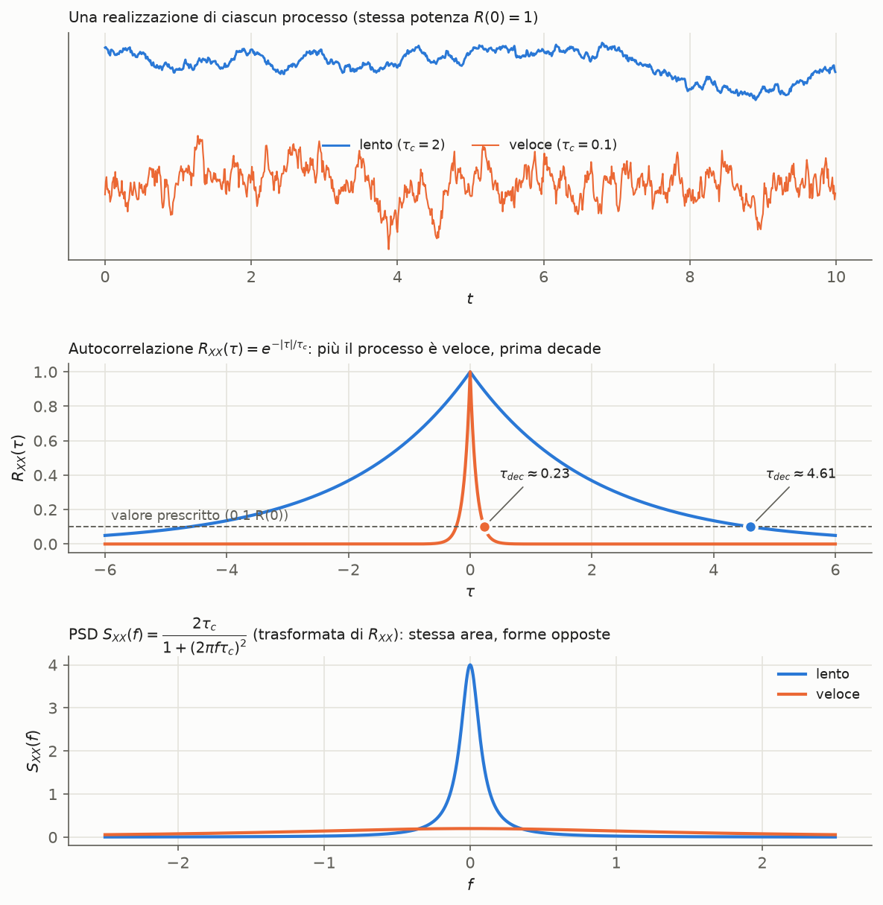
🧩 Grafico mio. Due processi gaussiani WSS con la stessa potenza R_{XX}(0) = 1: lento (\tau_c = 2) e veloce (\tau_c = 0.1).
- In alto una realizzazione di ciascuno: il veloce cambia molto di più da un istante all'altro.
- Al centro le autocorrelazioni e^{-|\tau|/\tau_c}: quella del veloce crolla subito (\tau_{dec} \approx 0.23), quella del lento dopo molto (\tau_{dec} \approx 4.61).
- In basso le PSD, trasformate delle autocorrelazioni: il lento concentra la potenza vicino a f = 0, il veloce la spalma su una banda larga. L'area è la stessa, 1.
Come si costruisce R_{XX}(\tau) (animazione)
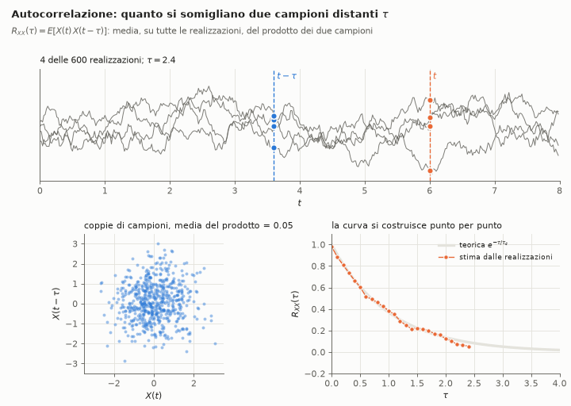
🧩 Animazione mia della (7), con 600 realizzazioni del processo esponenziale (\tau_c = 1).
- In alto: si fissa t = 6 e si prende il campione a t - \tau, con \tau che cresce da 0 a 4.
- In basso a sinistra: le 600 coppie (X(t), X(t-\tau)). Per \tau = 0 stanno sulla bisettrice; al crescere di \tau la nuvola si allarga fino a diventare circolare, cioè i campioni non si "somigliano" più.
- In basso a destra: la media del prodotto su tutte le realizzazioni è la stima di R_{XX}(\tau), che segue la curva teorica e^{-\tau/\tau_c}.
È la definizione (7) letta nel senso del primo punto di vista: il valore atteso è una media sull'insieme delle realizzazioni, a istanti fissati.
🎯 Esame: definire la lag-acf; dimostrare le tre proprietà (valore in 0, parità, massimo in 0); definire l'autocorrelazione normalizzata; spiegare il legame tra velocità di variazione del processo, larghezza di R_{XX} e tempo di decorrelazione.
Perché importa
Dice quanto "memoria" ha un processo: per quanto tempo il suo valore attuale dà informazione su quello futuro. Attraverso la trasformata di Fourier diventa la densità spettrale di potenza (densita spettrale di potenza): un'autocorrelazione stretta corrisponde a uno spettro largo, e viceversa.
Dimostrazioni passo-passo
Derivazione — Proprietà 1: R_{XX}(0) = E[X^2(t)]
È il valore quadratico medio, lo stesso per ogni t perché il processo è WSS. In densita spettrale di potenza è la potenza del processo.
Derivazione — Proprietà 2: R_{XX} è pari
🧩 Derivazione mia
In parole: "il campione di adesso con quello di \tau secondi fa" e "il campione di adesso con quello fra \tau secondi" sono la stessa coppia vista dall'altro lato.
Derivazione — Proprietà 3: |R_{XX}(\tau)| \le R_{XX}(0)
🧩 Due dimostrazioni mie
Con la disuguaglianza di Schwarz (correlazione e covarianza):
Con un quadrato non negativo:
Derivazione — |\rho_{XX}(\tau)| \le 1
Si divide la proprietà 3 per R_{XX}(0) > 0: |\rho_{XX}(\tau)| = |R_{XX}(\tau)|/R_{XX}(0) \le 1.
🧩 Se il processo ha media nulla, \rho_{XX}(\tau) è proprio il coefficiente di correlazione tra i campioni X(t) e X(t-\tau) (correlazione e covarianza): \text{Cov} = R_{XX}(\tau) e \sigma^2 = R_{XX}(0) per entrambi.
Derivazione — Tempo di decorrelazione dell'esempio esponenziale
🧩 Calcolo mio per il processo dei grafici, R_{XX}(\tau) = e^{-|\tau|/\tau_c} con R_{XX}(0) = 1 e soglia 0.1\,R_{XX}(0).
Numeri: \tau_c = 2 \Rightarrow \tau_{dec} \approx 4.61; \tau_c = 0.1 \Rightarrow \tau_{dec} \approx 0.23 (valori segnati nel grafico sotto). Sanity check: \tau_{dec} è proporzionale a \tau_c. Un processo con correlazione che si esaurisce 20 volte più in fretta ha un tempo di decorrelazione 20 volte più corto ✓. Il valore dipende dalla soglia scelta, che la slide lascia libera.
Processi aleatori attraverso sistemi LTI
Spiegazione
🧩 Il quadro (lettura mia):
- Un filtro deterministico non rende "più aleatorio" il processo: lo rimodella. La media viene moltiplicata per H(0); lo spettro di potenza per |H(f)|^2, quindi il filtro esalta o attenua le componenti di potenza alle varie frequenze.
- Nel tempo, l'autocorrelazione dell'uscita è quella d'ingresso "spalmata" da r_{hh}. Un filtro passa-basso stretto ha h lunga, quindi r_{hh} larga, quindi un'uscita più lenta: il tempo di decorrelazione aumenta (autocorrelazione processi wss).
- Non si conosce invece la distribuzione di Y, salvo per un ingresso gaussiano: in quel caso l'uscita resta gaussiana (processo gaussiano).
🎯 Esame: ricavare \mu_Y = \mu_X H(0) con le ipotesi per scambiare media e integrale; ricavare la (18) e la (20); dire perché ingresso WSS dà uscita WSS; ricavare S_{YY} = S_{XX}|H|^2.
Perché importa
Ogni blocco lineare di un sistema di comunicazione (filtri di trasmissione e ricezione, canale LTI) agisce su segnali e rumori aleatori. Queste formule dicono come cambiano media, correlazione e spettro di potenza, cioè le quantità che determinano il rapporto segnale-rumore.
Dimostrazioni passo-passo
Derivazione — Media dell'uscita, eq. (15) e (16)
Lettura: la media è la componente "continua" (a frequenza zero) del processo, e il filtro la moltiplica per il suo guadagno a frequenza zero.
Derivazione — Mutua correlazione delle uscite, eq. (17)–(18)
Due sistemi LTI: X_1 \to h_1 \to Y_1 e X_2 \to h_2 \to Y_2.
x_1(\cdot) \to h_1(\cdot) \to y_1(\cdot) e x_2(\cdot) \to h_2(\cdot) \to y_2(\cdot).
Derivazione — Ingressi congiuntamente WSS, eq. (19)–(20)
🧩 Passaggi miei dalla (19) alla (20), con \tilde h_2(\tau) = h_2(-\tau):
Il risultato dipende solo dal ritardo \tau.
LTI conserva l'incoerenza: se gli ingressi sono incoerenti, R_{X_1X_2} \equiv 0, allora R_{Y_1Y_2} = 0 \ast r_{h_1h_2} \equiv 0 e anche le uscite sono incoerenti.
Derivazione — Autocorrelazione dell'uscita e mutue correlazioni ingresso-uscita
Per le mutue correlazioni ingresso-uscita si usa la (20), facendo passare uno dei due rami per un filtro "identità" \delta(t):
Derivazione — Ingresso WSS ⇒ uscita WSS
🧩 Derivazione mia: le due condizioni della WSS (stazionarieta).
- Media costante: \mu_Y = \mu_X H(0), eq. (16), non dipende da t.
- Autocorrelazione funzione del solo ritardo: R_{YY}(\tau) = R_{XX}(\tau) \ast r_{hh}(\tau) dipende solo da \tau.
Derivazione — PSD dell'uscita, eq. (22)
In parole: la PSD dell'uscita è la PSD dell'ingresso moltiplicata per il modulo quadro della risposta in frequenza. La fase del filtro non conta. Potenza in uscita (🧩): P_Y = R_{YY}(0) = \int S_{XX}(f)\,|H(f)|^2\,df, per la (21) di densita spettrale di potenza. Sanity check (🧩): se \mu_X \neq 0, R_{XX} contiene la costante \mu_X^2 e quindi S_{XX} la riga \mu_X^2\,\delta(f). Nella (22) la riga diventa \mu_X^2|H(0)|^2\delta(f), cioè una media in uscita |\mu_Y| = |\mu_X H(0)|, in accordo con la (16) ✓.
Densità spettrale di potenza (PSD)
Spiegazione
- La PSD dice come la potenza del processo si distribuisce in frequenza. La sua area è la potenza totale, (21).
- Il significato fisico viene dal filtro a banda stretta: un filtro ideale centrato in f_c, largo \Delta f, lascia passare una potenza \approx 2\Delta f\,S_{XX}(f_c). Misurare la potenza all'uscita di filtri sempre più stretti è un modo di "misurare" la PSD.
- La densità spettrale mutua misura i legami in frequenza tra due processi.
🧩 Perché serve Wiener-Khinchin: la definizione con la finestra e il limite è concettuale ma scomoda da calcolare. Il teorema la riduce a una trasformata di Fourier dell'autocorrelazione, che spesso si calcola in poche righe (esempio sopra).
🎯 Esame: definire la PSD; enunciare e dimostrare Wiener-Khinchin; ricavare potenza e significato fisico (2\Delta f\,S_{XX}); dimostrare le proprietà 1–5; densità spettrale mutua e sua simmetria; PSD della somma di processi incoerenti.
Perché importa
È lo strumento per descrivere segnali e rumori aleatori in frequenza: quanta potenza cade nella banda di un filtro, di un canale, di un ricevitore. Con S_{YY} = S_{XX}|H|^2 (processi e sistemi lti) permette di calcolare la potenza di rumore all'uscita di qualunque filtro. Dà anche la banda occupata da un segnale modulato (calcolo densita spettrale).
Dimostrazioni passo-passo
Derivazione — Relazione di Wiener-Khinchin
🧩 Dimostrazione mia, partendo dalla definizione. Processo reale e WSS.
L'ultimo passaggio: nel quadrato [-T, T]^2 l'integrando dipende solo da \tau = t_1 - t_2. I punti con un dato \tau formano un segmento, e la sua proiezione su un asse è lunga 2T - |\tau|: questo è il "peso" di ogni \tau.
Derivazione — Eq. (21) e proprietà 1–2: potenza e valore in zero
Derivazione — Proprietà 3: S_{XX}(f) \ge 0
🧩 Derivazione mia, dalla definizione: \frac{1}{2T}E[|X_T(f)|^2] è il valore atteso di una quantità non negativa, diviso per 2T > 0, quindi è \ge 0 per ogni T; lo resta al limite. In alternativa, con il significato fisico qui sotto: se S_{XX} fosse negativa attorno a qualche f, un filtro stretto centrato lì misurerebbe una potenza negativa, il che è assurdo.
Derivazione — Proprietà 4: PSD pari per un processo reale
🧩 Derivazione mia
Con lo stesso conto, S_{XX}^\ast (f) = S_{XX}(-f) = S_{XX}(f) perché R_{XX} è reale: la PSD di un processo reale è reale e pari.
Derivazione — Proprietà 5: la PSD normalizzata si comporta come una pdf
p_{XX}(f) \ge 0 per la proprietà 3, e \int p_{XX}(f)\,df = \int S_{XX}\,df\big/\int S_{XX}\,df = 1.
🧩 Lettura mia: p_{XX}(f) dice come la potenza è distribuita in frequenza, come una pdf dice come la probabilità è distribuita sui valori.
Derivazione — Significato fisico: \Delta P_X \approx 2\Delta f\,S_{XX}(f)
🧩 Passaggi miei. Filtro ideale a banda stretta: |H(f)| = 1 in due finestre larghe \Delta f centrate in \pm f_c, 0 altrove.
La slide scrive il risultato come \Delta P_X \approx (2\Delta f)\,S_{XX}(f) «con f_c \equiv f per generalità»: la frequenza centrale del filtro può essere qualunque, e il filtro "legge" la PSD proprio lì. Unità: [W/Hz]·[Hz] = [W] ✓: per questo S_{XX} è una densità di potenza per unità di frequenza. Il fattore 2: la banda "fisica" larga \Delta f attorno a f_c ha una gemella attorno a -f_c, e la potenza reale le conta entrambe, per una larghezza totale 2\Delta f.
modulo della risposta del filtro ideale a banda stretta: vale 1.0 in due finestre di larghezza \Delta f centrate in -f_c e f_c, 0 altrove.
Derivazione — Densità spettrali mutue: S_{XY}(f) = S_{YX}(-f) = S_{YX}^\ast (f)
🧩 Passaggi miei
S_{XY} non è necessariamente reale, perché R_{XY} non è pari.
Derivazione — PSD di una somma, eq. (27)–(30)
In parole: la PSD della somma di processi WSS incoerenti, o in modo equivalente a media nulla e incorrelati, è la somma delle PSD. Le potenze si sommano solo se i processi non "interferiscono" tra loro.
🧩 Sanity check: nella (29) i due termini misti sommano a S_{XY} + S_{XY}^\ast = 2\,\text{Re}\{S_{XY}\}, reale, per la simmetria appena ricavata. Anche S_{ZZ} è quindi reale ✓.
Esempio — Wiener-Khinchin sull'autocorrelazione esponenziale
🧩 Esempio mio: il processo dei grafici, R_{XX}(\tau) = e^{-|\tau|/\tau_c} con potenza 1.
Verifiche con le proprietà:
- proprietà 1: S_{XX}(0) = 2\tau_c = \int e^{-|\tau|/\tau_c}d\tau ✓;
- proprietà 2: \int S_{XX}\,df = 2\tau_c\cdot\frac{1}{2\pi\tau_c}\cdot\pi = 1 = R_{XX}(0) ✓, usando \int\frac{du}{1 + u^2} = \pi con u = 2\pi f\tau_c;
- proprietà 3 e 4: S_{XX} è positiva e pari ✓.
Lettura: \tau_c grande (processo lento) dà una PSD alta e stretta; \tau_c piccolo (processo veloce) una PSD bassa e larga. È il grafico "lento contro veloce" di autocorrelazione processi wss.
PSD a tempo discreto
X_N(\nu) e Y_N(\nu) sono le trasformate di Fourier a tempo discreto delle versioni troncate di X(n) e Y(n); la seconda si ottiene dalla prima con X(n) \equiv Y(n). Per Wiener-Khinchin, la PSD di un processo WSS a tempo discreto è la trasformata a tempo discreto della sua autocorrelazione R_{XX}(m).
🧩 In formula, con la convenzione X(\nu) = \sum_n x(n)\,e^{-j2\pi\nu n} che la slide non scrive: S_{XX}(\nu) = \sum_{m=-\infty}^{+\infty} R_{XX}(m)\,e^{-j2\pi\nu m}. Il 2N + 1 al denominatore è il numero di campioni tra -N e N, l'analogo della durata 2T.
Processo gaussiano
Spiegazione
Perché è così importante
- I processi prodotti da fenomeni fisici sono spesso tali che un modello gaussiano è adeguato, e gli esperimenti lo confermano.
- Il teorema del limite centrale dà la giustificazione matematica: la somma di molti contributi indipendenti tende a una gaussiana (variabile aleatoria gaussiana).
- Il processo gaussiano è molto frequente nei fenomeni fisici e facile da trattare matematicamente: per questo è centrale nello studio dei sistemi di comunicazione.
Proprietà
- Un processo gaussiano applicato a un filtro lineare stabile dà in uscita un processo ancora gaussiano.
- Un processo gaussiano WSS (debolmente stazionario) è anche stazionario in senso stretto.
- Se i campioni X(t_1), \dots, X(t_n) sono incorrelati, cioè C_{XX}(t_k, t_i) = 0 per k \neq i, sono anche statisticamente indipendenti. La matrice di covarianza è diagonale e la pdf congiunta è il prodotto delle pdf dei singoli campioni, eq. (34).
🧩 In sintesi: per un processo gaussiano, media e covarianza sono tutto. La caratterizzazione parziale (momenti di un processo) coincide con quella completa (processo aleatorio), ed è per questo che le proprietà 2 e 3 valgono.
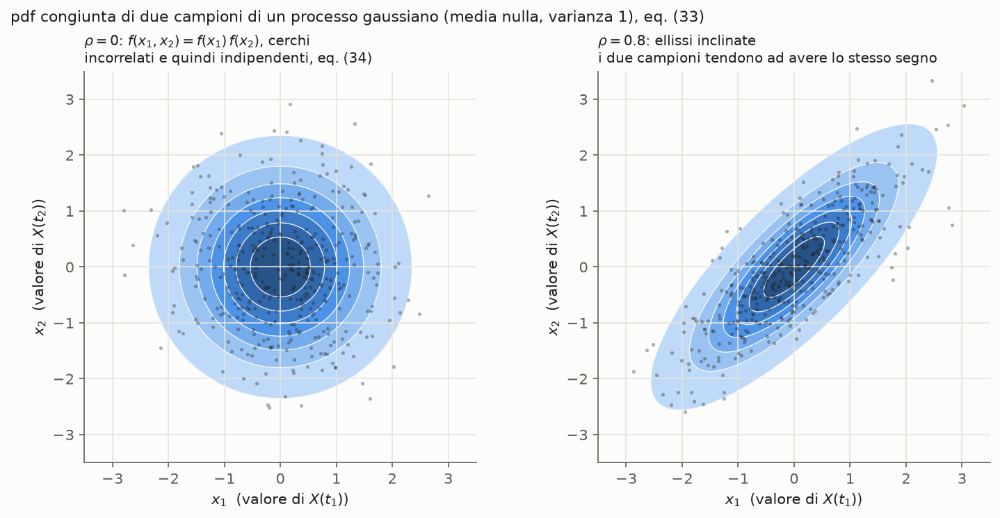
🧩 Grafico mio (eq. (33) con n = 2 e (34)). Curve di livello della pdf congiunta di due campioni X(t_1), X(t_2) a media nulla e varianza 1, con 400 coppie estratte.
- A sinistra \rho = 0: cerchi, e la pdf è il prodotto delle marginali. Incorrelati quindi indipendenti.
- A destra \rho = 0.8: ellissi inclinate lungo la bisettrice, cioè i due campioni tendono ad avere lo stesso segno.
Col processo esponenziale degli altri grafici (R_{XX}(\tau) = e^{-|\tau|/\tau_c}), \rho = 0.8 corrisponde a due campioni distanti |t_1 - t_2| = \tau_c\ln(1/0.8) \approx 0.22\,\tau_c.
🎯 Esame: definire il processo gaussiano; scrivere la (33) e spiegarne i simboli; perché \boldsymbol{\Sigma} è simmetrica e semidefinita positiva; dimostrare le proprietà (WSS ⇒ SSS, incorrelazione ⇒ indipendenza); perché il modello gaussiano è così usato.
Perché importa
Il rumore termico nei ricevitori si modella come processo gaussiano (variabile aleatoria gaussiana, sistema comunicazione digitale). Il processo gaussiano ha tre vantaggi:
- resta gaussiano attraverso i filtri;
- è descritto completamente da media e autocorrelazione;
- ha campioni incorrelati che sono indipendenti.
Per questo le prestazioni dei sistemi, come la probabilità d'errore con la funzione Q, si calcolano in forma chiusa.
Dimostrazioni passo-passo
Derivazione — Con n = 1 si ritrova la gaussiana scalare
🧩 Verifica mia
È la pdf gaussiana di una variabile ✓.
Derivazione — Due campioni: la gaussiana bivariata
🧩 Caso n = 2 scritto per esteso (usato nel grafico). Media nulla, varianze 1, coefficiente di correlazione \rho (correlazione e covarianza).
Le curve di livello sono ellissi; con \rho = 0 sono cerchi.
Derivazione — \boldsymbol{\Sigma} è simmetrica e semidefinita positiva
🧩 Derivazione mia. Scrivo \tilde X_k = X(t_k) - \mu_{X(t_k)}.
Lettura: \mathbf{u}^T\boldsymbol{\Sigma}\mathbf{u} è la varianza della combinazione lineare \sum_k u_k X(t_k), e una varianza non può essere negativa. Vale 0 solo se quella combinazione è (quasi certamente) costante. Il caso non degenere, \boldsymbol{\Sigma} definita positiva e quindi invertibile, è quello in cui nessuna combinazione non banale dei campioni è costante. Serve perché la (33) contiene \boldsymbol{\Sigma}^{-1} e \det\boldsymbol{\Sigma} al denominatore.
Derivazione — Incorrelati ⇒ indipendenti, eq. (34)
La pdf congiunta è il prodotto delle marginali, cioè i campioni sono indipendenti (coppie di variabili aleatorie). Per variabili qualunque, invece, incorrelazione non implica indipendenza (correlazione e covarianza).
Derivazione — WSS ⇒ SSS per un processo gaussiano
🧩 Derivazione mia
- La pdf di ordine n (33) dipende solo da \boldsymbol{\mu} e \boldsymbol{\Sigma}.
- Se il processo è WSS, la media è costante e la covarianza dipende solo dalla differenza tra gli istanti: C_{XX}(t_k + \tau, t_i + \tau) = C_{XX}(t_k - t_i).
- Quindi i campioni traslati X(t_1 + \tau), \dots, X(t_n + \tau) hanno gli stessi \boldsymbol{\mu} e \boldsymbol{\Sigma} di quelli originali, e quindi la stessa pdf. Questo per ogni n: è la (6) per ogni ordine, cioè SSS (stazionarieta).
Per un processo qualunque questo ragionamento non funziona: le distribuzioni di ordine superiore non sono determinate da media e covarianza.
Derivazione — Un filtro lineare stabile conserva la gaussianità
🧩 Idea della dimostrazione, non una dimostrazione completa. Y(t) = \int h(\tau)X(t - \tau)\,d\tau \approx \sum_k h(\tau_k)X(t - \tau_k)\,\Delta\tau: ogni campione dell'uscita è il limite di una combinazione lineare di campioni dell'ingresso. 📚 Fonte esterna (proprietà standard della gaussiana multivariata, per esempio nel testo di Madhow): combinazioni lineari di variabili congiuntamente gaussiane sono ancora congiuntamente gaussiane.
Quindi i campioni Y(t_1), \dots, Y(t_n) sono congiuntamente gaussiani. Le loro medie e covarianze si calcolano con processi e sistemi lti.
Calcolo della densità spettrale di potenza
Domande da esame
- Definire un processo aleatorio: i due punti di vista, le realizzazioni, la variabile aleatoria a istante fissato. Applicarli alla sinusoide a fase casuale.
- Caratterizzazione completa e parziale; distribuzioni di ordine k e loro coerenza; DF del processo di Bernoulli.
- Media, autocorrelazione e autocovarianza; ricavare C = R - \mu\mu.
- Stazionarietà: ordine k, SSS, primo e secondo ordine, WSS; SSS ⇒ WSS.
- Proprietà dell'autocorrelazione di un processo WSS, con dimostrazione; tempo di decorrelazione.
- Mutue correlazioni; processi indipendenti, incoerenti, incorrelati.
- Media e autocorrelazione dell'uscita di un filtro LTI; ingresso WSS ⇒ uscita WSS.
- PSD: definizione, Wiener-Khinchin (con dimostrazione), S_{YY} = S_{XX}|H|^2, significato fisico, proprietà.
- PSD della somma di due processi; ruolo dell'incoerenza.
- Processo gaussiano: pdf multivariata e proprietà.
- PSD di un segnale modulato linearmente.